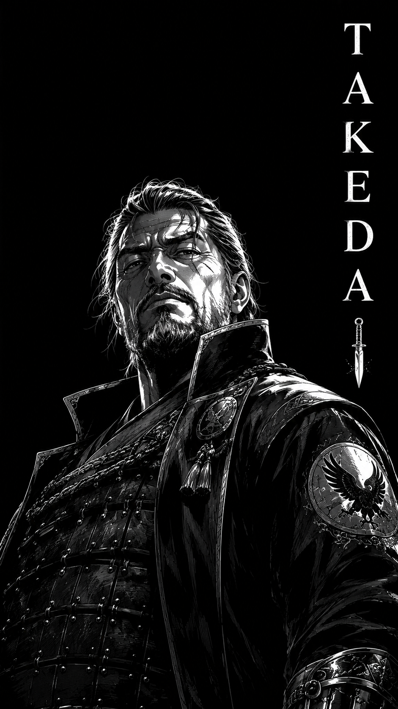
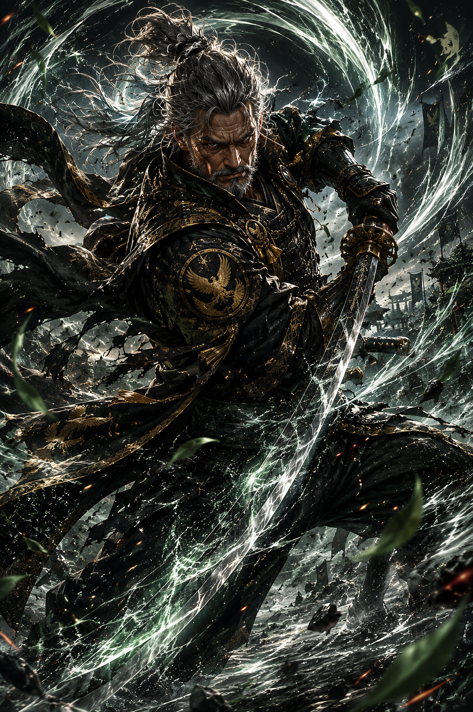

“A guerra destrói homens. O dever decide o que sobra deles.”
O Soldado Que Recusou Se Tornar Um Monstro
Major Takeda é um dos oficiais mais respeitados do exército imperial. Diferente da maioria dos comandantes que servem cegamente ao poder, Takeda construiu sua reputação através da disciplina, da estratégia e do profundo respeito pela vida de seus homens.
Nascido em uma região marcada pela guerra, Takeda cresceu observando aldeias serem destruídas por conflitos políticos e pela ambição de líderes corruptos.
Desde jovem compreendeu que a verdadeira força de um guerreiro não está apenas na espada, mas na capacidade de suportar o peso das próprias escolhas.
Durante anos participou de campanhas militares violentas nas fronteiras do império, enfrentando rebeliões, mercenários e criaturas vindas das montanhas do norte.
Foi nesse período que passou a ouvir rumores sobre a linhagem amaldiçoada dos Kurotsuki e sobre a existência de Hikogu no Mori.
Muitos homens enlouqueciam ao ouvir aquelas histórias.
Takeda decidiu investigar.
Conforme avançava em suas descobertas, percebeu que havia algo profundamente errado dentro da própria estrutura imperial. Nobres desapareciam misteriosamente, soldados retornavam diferentes das expedições ao norte e documentos antigos eram ocultados pelo governo.
Aos poucos, Takeda compreendeu que a corrupção do império era muito maior do que imaginava.
E no centro daquela escuridão existia um nome.
Hikogu.
Ao contrário de outros oficiais, Takeda não busca poder absoluto. Seu objetivo é impedir que o império seja completamente consumido pela influência demoníaca que se espalha silenciosamente entre os clãs.
Sua relação com Rin Kurosawa é complexa. Embora inicialmente a enxergasse apenas como uma fugitiva perigosa, Takeda percebeu nela algo raro: alguém disposto a desafiar o próprio destino.
Ele também reconhece em Katsuro uma força assustadora, mas diferente dos outros homens, Takeda não teme monstros. Ele teme aquilo que os homens fazem para criá-los.
Entre soldados, seu nome tornou-se símbolo de liderança. Entre nobres corruptos, tornou-se um problema.
E nas sombras do norte, há quem diga que Hikogu no Mori observa Takeda com interesse.
“Quando homens esquecem a honra, a guerra deixa de ter significado.”